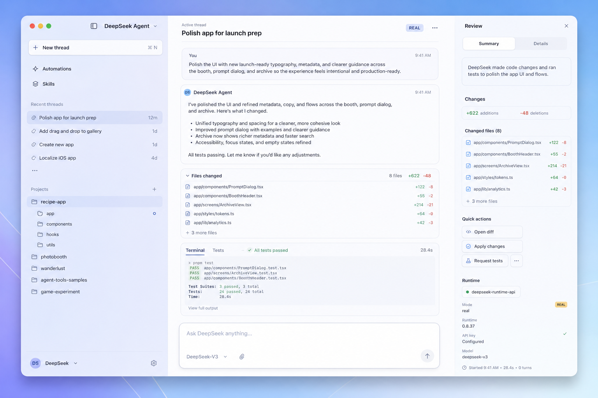
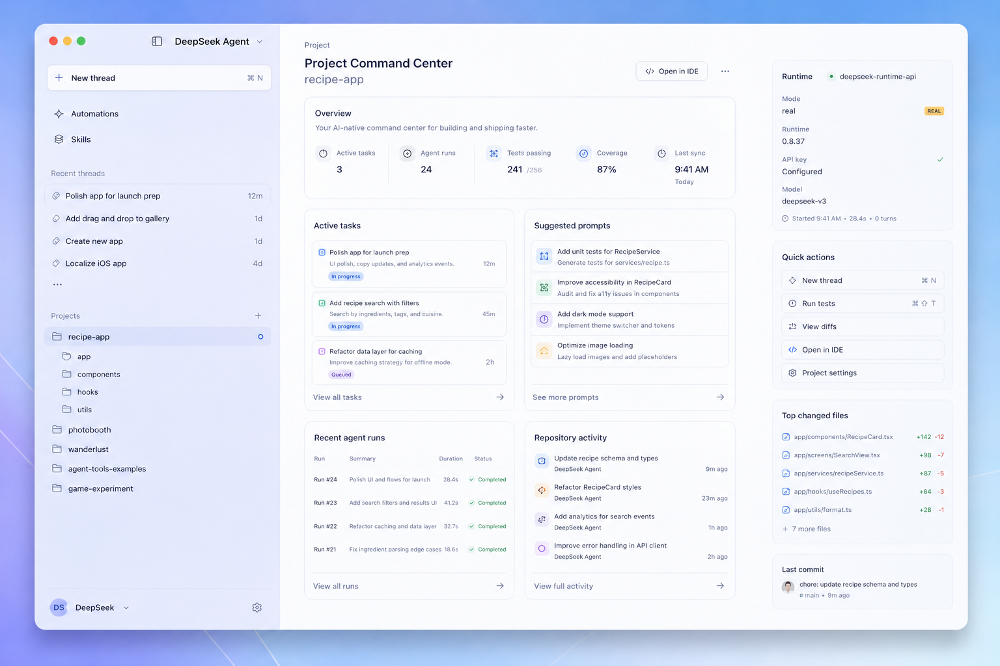

核心产品路径
First Run Setup → Project Command Center → New Thread → Agent Turn → Approval → Review Changes → Apply/Reject → Settings & Usage。
Codex 不可偏离的范围
不做多 provider，不重写 TUI runtime，不留静态假按钮，不弹系统钥匙串密码框，不画假的 macOS 窗口 chrome。
推荐给 Codex 的 Goal
/goal Implement codex/CODEX_PRODUCT_GOAL.md. Keep iterating until the product journey works end-to-end in Demo Mode, the app has no fake macOS chrome or blue background bleed, no Keychain password prompt appears, all visible controls are either wired or explicitly disabled, and all acceptance checks in docs/07_ACCEPTANCE_CHECKLIST.md pass.
参考效果图


